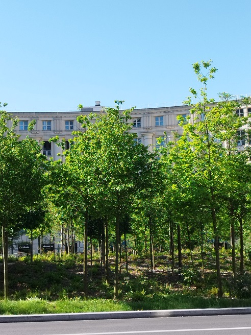
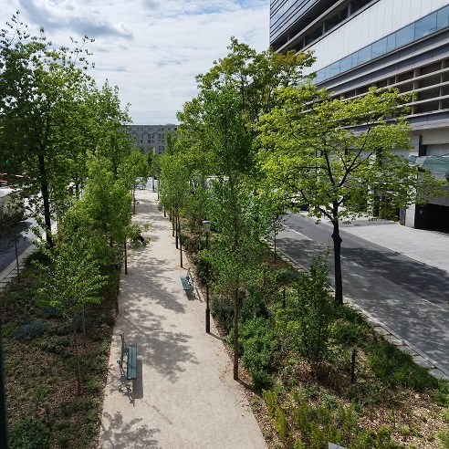
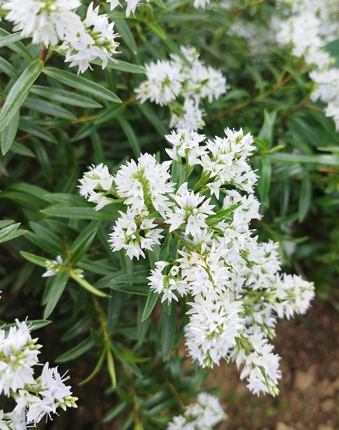
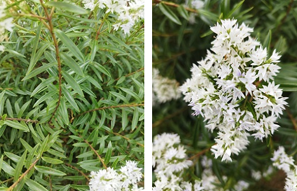
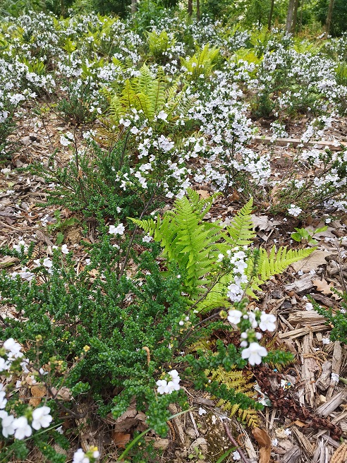
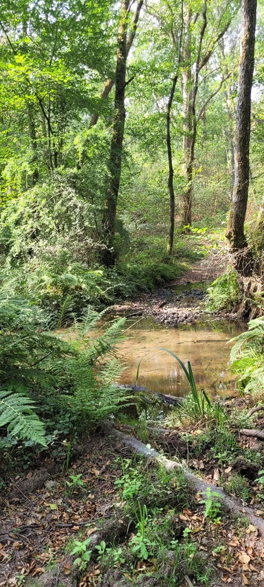

Paisible à Montparnasse, une "forêt" ?
{kind=link}
Non loin de vrais coins de verdure
et au bout d'une "rue" sans doute destinée à devenir zone de rencontre selon le code de la route

Une "forêt"
place de Catalogne à Paris, 30 avril 2025
(interdite aux chiens et aux personnes SDF et sans-abri mais pas à ces animaux que Paris accueille)
{kind=link}
et d'un accès peu champêtre malgré son chemin "forestier" de la rue du Commandant-René-Mouchotte,
dans une ville où les cours « Oasis » se multiplient dans les écoles
mais où les enfants ne trouvent plus une goutte d'eau aux prétendus points d'eau potable
comme dans le tout proche square du Cardinal Wyszynski

.Lorsque le Dijonnais Jean-Philippe Rameau devenu Parisien offrait sa version du 23 août 1735 de ses Indes galantes et même si Louis XIV avait écrasé cette Fronde depuis longtemps, le Mont de la Fronde était-il toujours le tas de gravats qu'il était en 1657 (quand les cartographes n'avaient pas encore accepter systématiquement la convention de l'orientation au Nord) ? Ou bien avait-il déjà pris le nom de Mont de Parnasse devenu le Montparnasse des Forêts (paisibles ?!) des |
{kind=link}

Veronica salicifolia G.Forst., 1786
en forêt de la place de Catalogne à Paris, 7 mai 2025
| En tout cas, au XVIIIe siècle, ne peut-on douter qu'une plante exotique, originaire de l'Hémisphère Sud, à risque invasif non documenté sur l'île de la Réunion en 2025 comme Veronica salicifolia G.Forst., 1786, de la famille des Plantaginaceae, l'hébé (ou hebe ?) ou encore véronique à feuilles de saule, puisse avoir été plantée sur le Mont de Parnasse au mois de mai dans une "forêt" gérée par une ville distribuant des graines de plantes locales au mois d'avril. |
{kind=link}

Veronica salicifolia G.Forst., 1786
en forêt de la place de Catalogne à Paris, 7 mai 2025
La place de Catalogne se préparerait-elle à fêter une date anniversaire ?
Celle de la création des Fêtes d'Hébé de Jean-Philippe Rameau sur un livret d'Antoine-César Gautier de Montdorge le 21 Mai 1739 ?
À moins qu'il faille la considérer comme salvatrice d'une Lamiacée disparue de Tasmanie en Australie à cause de ses ceuillettes intensives, une menthe nommée Alpine mint bush ou menthe australienne, Prostanthera cuneata Benth. 1848 nous annonçant peut-être la plantation prochaine de gommiers des neiges, Eucalyptus pauciflora subsp. niphophila ?

Prostanthera cuneata Benth., 1848
en forêt de la place de Catalogne à Paris, 7 mai 2025
Les forêts ne seraient-elle plus | |
| Forêt d'Avallon  17 août 2026 © Claire Martin-Lucy |
 |